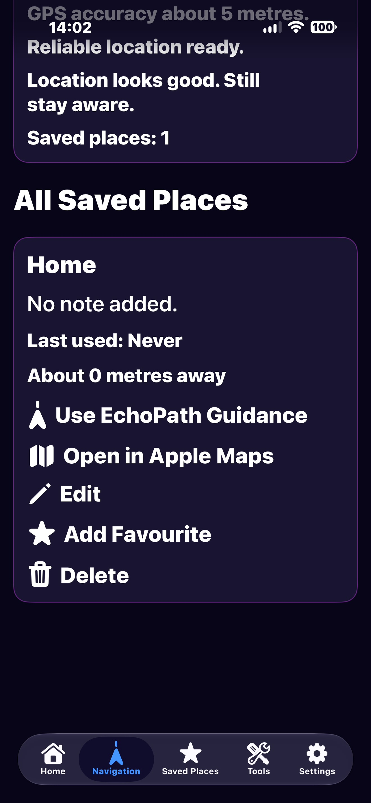
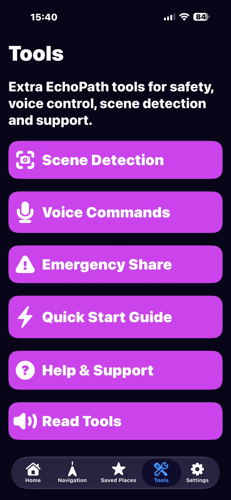
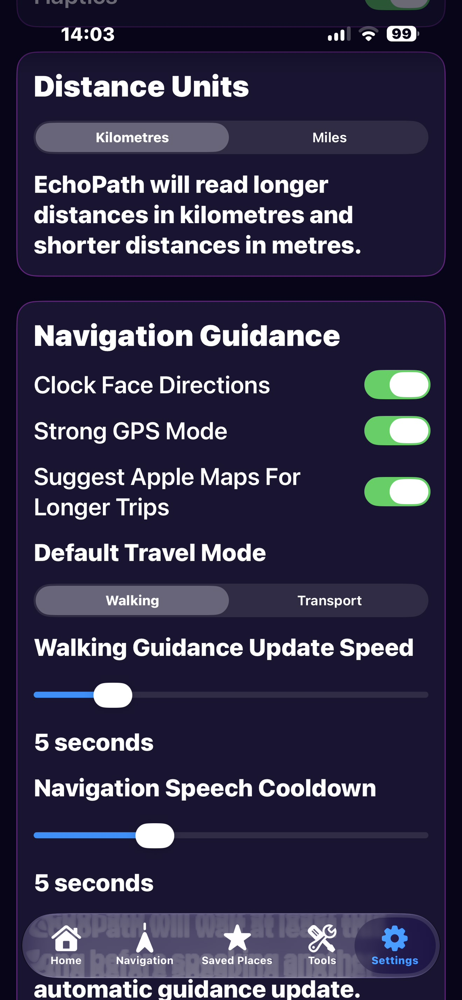

Navigation choices
Walking, driving, taxi, bus and train options are shown when appropriate for the journey, with provider choices that can include EchoPath Guidance, Apple Maps and Google Maps.
EchoPath for iOS
EchoPath for iOS is in public TestFlight while version 1.0 is prepared for release. The current beta combines accessible navigation, Google and Apple mapping choices, Scene Detection, Search This Photo, nearby-place awareness, saved destinations and safety tools.
Current iOS capabilities
Walking, driving, taxi, bus and train options are shown when appropriate for the journey, with provider choices that can include EchoPath Guidance, Apple Maps and Google Maps.
Google Places, Google Routes and Google Navigation support destination search, route calculation and in-app turn-by-turn guidance for supported modes.
Current-location information can include nearby named places and explicit spoken reading when requested.
Qwen3-VL Scene AI can inspect the photograph directly on supported devices, with Apple Vision and RF-DETR supporting object detection and fallback behaviour.
Ask open-ended questions about the current Scene Detection photo, including objects, text, colour, position, counts and relationships.
Saved destinations, Emergency Share, Safety Check-In and other supporting tools help keep useful information close at hand.
All supplied iPhone screenshots
These are all of the iPhone screenshots currently included with the website. Because EchoPath remains in beta, some screens may differ from the latest TestFlight build.





TestFlight is used to validate accessibility, navigation reliability, Scene Detection performance and release readiness on real devices before the first public version.
Read beta questions →